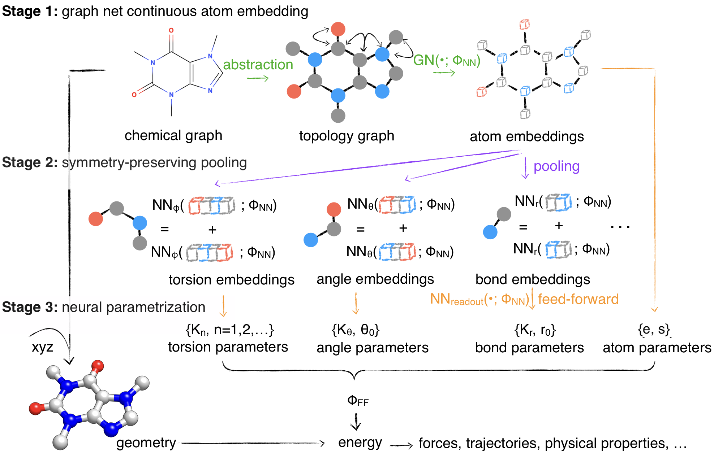

espaloma: Extensible Surrogate Potential Optimized by Message-passing Algorithms
Source code for Wang Y, Fass J, and Chodera JD “End-to-End Differentiable Construction of Molecular Mechanics Force Fields. https://arxiv.org/abs/2010.01196
Paper Abstract
Molecular mechanics (MM) potentials have long been a workhorse of computational chemistry. Leveraging accuracy and speed, these functional forms find use in a wide variety of applications in biomolecular modeling and drug discovery, from rapid virtual screening to detailed free energy calculations. Traditionally, MM potentials have relied on human-curated, inflexible, and poorly extensible discrete chemical perception rules atom types for applying parameters to small molecules or biopolymers, making it difficult to optimize both types and parameters to fit quantum chemical or physical property data. Here, we propose an alternative approach that uses graph neural networks to perceive chemical environments, producing continuous atom embeddings from which valence and nonbonded parameters can be predicted using invariance-preserving layers. Since all stages are built from smooth neural functions, the entire process—spanning chemical perception to parameter assignment—is modular and end-to-end differentiable with respect to model parameters, allowing new force fields to be easily constructed, extended, and applied to arbitrary molecules. We show that this approach is not only sufficiently expressive to reproduce legacy atom types, but that it can learn and extend existing molecular mechanics force fields, construct entirely new force fields applicable to both biopolymers and small molecules from quantum chemical calculations, and even learn to accurately predict free energies from experimental observables.